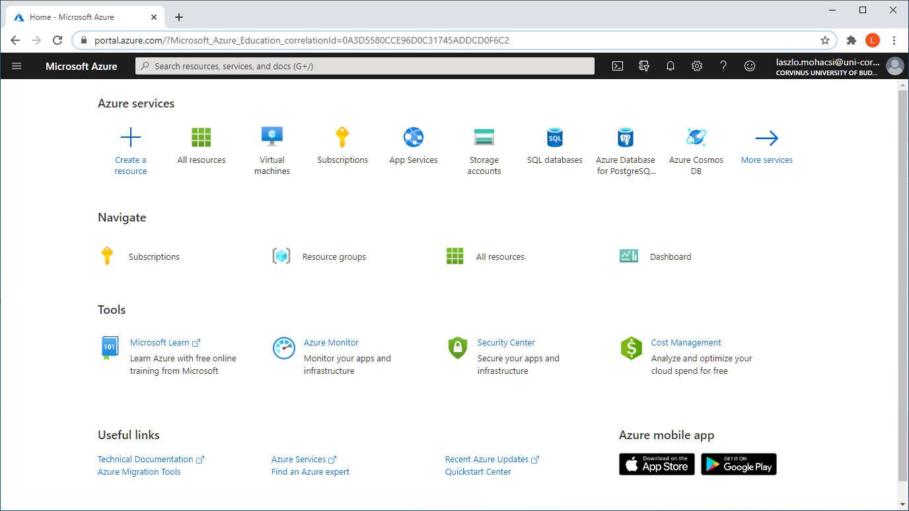

Azure fiók regisztrálása
Note
Azure fiókra nem feltétlenül van szükség a tárgy teljesítéséhez.
Áttekintés
Ha még nincs, az alábbiak szerint hozhatsz létre Azure for Students fiókot.
Azure fiókra Adatbázisrendszerek, Software Engineering, és IT Architektúrák tárgyakból is szükség lesz. Mivel a tárgyakat nem kötelező az operatív tanterv szerint felvenni, a leírás első részével több tárgynál is találkozhattok.
Az Azure fiókót több dologra is használjuk a kurzus során:
- Azure-ban lehetőségünk van saját SQL szervert létrehozni.
- A Software Engineering tárgy második blokkjában fejlesztendő webalkalmazást Azure WebApp formájában fogjuk majd közzétenni.
Azure előfizetési konstrukciók
Az Azure szolgáltatásai többféle fizetési konstrukcióban vehetők igénybe:
- Azure free account azoknak, akiknek ez az első regisztrációjuk. Minden újonnan regisztráló felhasználhat 200USD-t 12 hónap alatt. Bővebben itt
- Pay-as-you-go: meg kell adni a hitelkártya adatait, az MS havonta terheli az igénybevett szolgáltatások költségeit. A kártyaadatokat akkor meg kell adni, ha csak ingyenes szolgáltatásokat veszünk igénybe, és nem merül fel kiszámlázandó költség.
- Enterprise agreement: nagy, vállalati felhasználók külön szerződést kötnek. Bizonyos erőforrásigény felett a Pay-as-you-go konstrukció már nem használható. Itt már az ár is megegyezés kérdése.
- Azure for students: diákoknak szóló ajánlat. Addig, amig diák vagy évente 100 USD keretet biztosít a Microsoft.
Azure for students fiók regisztrálása
◯ Készítsd elő az egyetemi e-mail címed!
Ha nem tudod, mi az egyetemi címed, a Cusman-on megnézheted, és a ez egyetemi webmail felületen el is olvashatod a leveleidet.
◯ Ezen a linken érhető el a Microsoft Azure ingyenes, hallgatók számára biztosított előfizetésének regisztrációs felülete. Az egyetemi e-mail címeddel kell regisztrálni, mert a címhez tartozó domain-ből tudja az MS, hogy diákhoz tartozik.
◯ Az zöld aktiválás gombra kattintva felugrik a Microsoft bejelentkező felülete.
Az stud.uni-corvinus.hu domain regisztrálva van Microsoftnál is, így egyetemi e-mail címet használva igényelhetjük az ingyenes Azure for Students szolgáltatást.
◯ Töltsd ki a regisztrációs űrlapot!
- Meg kell adni egy telefonszámot is, amire egy kódot fognak küldeni SMS-ben.
- A telefonszámot semmilyen más módon nem használják fel, nyugodtan meg lehet adni.
◯ Ha sikerült a regisztráció, akkor automatikusan az portal.azure.com-ra kerülünk -- a címet érdemes megjegyezni. Az első lap, ami a regisztrációt követő bejelentkezés után megjelenik a Home / Education. Érdemes eltölteni azzal egy kis időt, hogy átnézzük, milyen szoftvereket és oktatási anyagokat kínál a Microsoft. Ezek köre időről időre bővülni szokott. A Home linkre kattintva megjelenik az Azure kezdőoldala:

Technikai probléma esetén Teams-ben kérhető segítség a regisztrációval és/vagy a konfigurációval kapcsolatban.
Azure for students előfizetés megújítása
Az Azure for students előfizetéssel rendelkezők minden évben a regisztráció évfordulóján új költségkeretet igényelhetnek, ameddig él az egyetemi e-mail címük. A fel nem használt keret elveszik.
Nem működik az Azure for students előfizetésem... Mit tehetek?
Regisztrálhatsz 12 hónapra egy Azure free accountot itt. Ebben az esetben már meg kell adni bankkártya számot, melyet a Microsoft az érvényesség ellenőrzése végett megterhel néhány dollárral, melyet később visszautal. Itt már nagyon kell vigyázni, mert az igénybe vett szolgáltatásokat könyörtelenül kiszámlázzák. Viszont kis odafigyeléssel a költségek alacsonyan tarthatók, vagy elkerülhetők.
Bárki regisztrálhat Pay-as-you-go előfizetést. Itt is az igénybe vett szolgáltatások alapján számláznak.